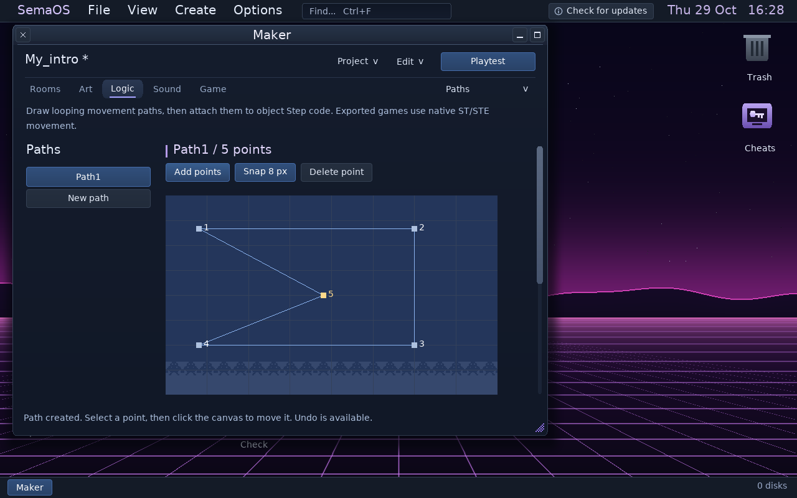
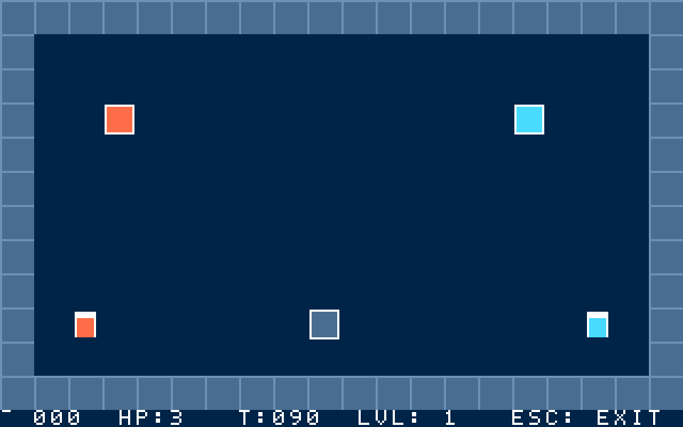
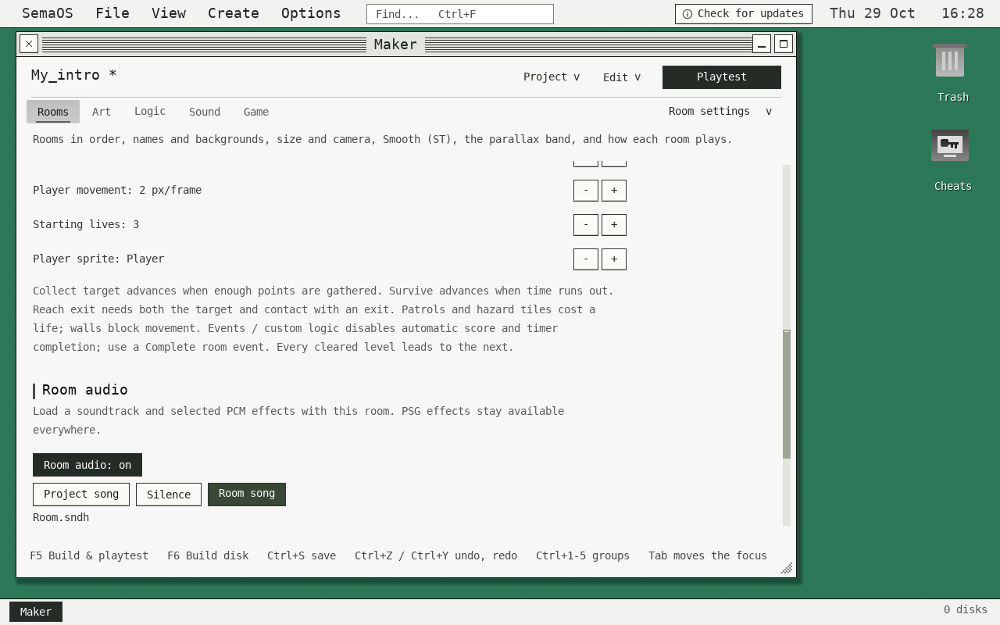

Arcade, platform & top-down
Build rooms, place objects and define movement, contact rules, hazards and goals. Add scrolling worlds, a following camera and animated sprites.
SEMAOS CREATOR SUITE · INCLUDED WITH SEMATOR
Draw the world. Give it rules. Write its soundtrack.
Build a playable ST or STE disk from one connected desktop.
Windows & Linux · Mouse-and-keyboard workspaces · Violet & GEM themes

START WITH SOMETHING PLAYABLE
Start with editable projects, then change the artwork, behaviour and sound. The examples use the same tools you use for your own game.
Build rooms, place objects and define movement, contact rules, hazards and goals. Add scrolling worlds, a following camera and animated sprites.
The Puzzle starter asks you to touch three locks in order. Change its rules and variables to make your own sequence, switches and doors.
Twin switches gives each player a switch to hold before they meet at the exit. Its movement and win logic are editable, with keyboard and joystick controls.
Make an ST intro, create standalone pixel artwork or write a soundtrack. You can use the individual creative apps without building a game.
ONE DESKTOP / CONNECTED TOOLS
The 1.1.586 suite brings compact menus, focused inspectors, more canvas space and project links across the creative apps.
BUILD THE GAME
Bring rooms, artwork, objects, rules and audio together in an editable project.
DRAW & ANIMATE
Work in sixteen colours with ST or STE palettes. Draw your backdrop, make tiles and animate sprites, then move the artwork into Maker.
COMPOSE & DESIGN SOUND
Write patterns and arrange songs. Shape YM instruments, work with digi and Quartet samples, or add an STE stereo sample track.
SHAPE THE SAMPLE
Prepare sounds for your project with waveform selection, zoom, playback and precise range controls.
GO DEEPER IN CODE
Add game logic in SemaBASIC within Maker, or work directly in 68000 assembly in Program Lab.

Disk Workshop browses and prepares disks. Hardware Check runs generated disks against emulated machine configurations. Code Reader helps inspect 68000 programs. Explorer & Documents keep your files accessible to the apps that understand them.
FROM IDEA TO DISK
Artwork, music and logic remain editable. Build and playtest as you go, then return to the part you want to improve.
Open Maker, choose a starter and select the target machine. Play it first to understand how its rules work.
Replace the art, lay out rooms, place objects and change the camera. Use Paint or import your own pictures and sprite sheets.
Edit events and variables, draw paths and add routines where needed. Compose in SemaSynth and prepare samples for the chosen target.
Build & playtest, check memory and performance, and step through troublesome logic. Export a bootable disk or a supported multi-disk project.

TRY THIS FIRST
In the Puzzle starter, change a message or the lock order. In Twin switches, change the players’ colours or the switch positions. Build again and see your edit in a running native game.
Built-in Help includes the SemaBASIC reference and searchable SemaSynth lessons.
CHOOSE WHAT YOU ARE BUILDING FOR
Target choice matters. Artwork, sample playback, memory and effects all share the original machine’s budget.
Build native games with graphics, rules, code and supported YM sound. Generated games boot from AUTO; the 520 ST target checks available program memory.
Use STE palettes and supported DMA sample features, including four-channel MOD playback and stereo options. More demanding audio leaves less CPU time for the game.
Creator exports can include a matching enhancement profile for Smooth Motion and expanded views. These presentation features are provided by SemaTor when running the game.
Complete generated disks have been checked on emulated 520 ST and STE targets. Physical ST/STE confirmation remains pending. Heavy repeated particle effects or high-rate audio can exceed the original hardware’s frame budget.
BEFORE YOU START
You can start with the editable examples and visual rules. SemaBASIC lets you extend behaviour as your idea grows; Program Lab is available when you want to work directly in assembly.
Yes. Supported picture imports include Degas, NEOchrome, Spectrum 512, PNG, BMP, GIF and SemaPaint artwork. Images are adapted to the target palette where necessary. Music workflows include SemaSynth songs and supported MOD/SNDH imports; format conversions report features they cannot preserve.
Yes: choose the project song, silence or an imported 50 Hz SemaSynth SNDH up to 128 KB. You can also select which effects from the existing 16-effect/128 KB PCM bank load with the room. Per-room audio currently cannot be combined with global MOD music.

Maker supports packed programs, packed or disk-loaded room/scene resources, 360 KB or 720 KB disks and projects spanning up to nine disks. Memory checks account for loading and unpacking as well as the running program.
They are starting points you can edit. Twin switches uses an open court; if you add internal walls, extend its movement logic with terrain checks. Test your own changes and target configuration before sharing a finished game.
The tools are included inside SemaOS in the public Windows x64, Linux x86-64 and Linux ARM64 desktop builds. Start from the desktop’s Create menu. Android is a separate private testing build; this page focuses on desktop authoring.
Get the desktop preview and explore the included Creator tools.
Want the complete update history? Read the full 1.1.586 changelog.